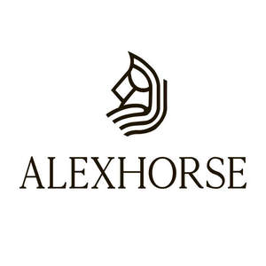

Trade Mark Journal No.2025/015 11 April 2025
UK00004179647 26 March 2025 (3)

- Class 3
- Cooling sprays for cosmetic purposes; amber [perfume]; antiperspirants [toiletries]; aromatics [essential oils]; potpourris [fragrances]; balms, other than for medical purposes; basma [cosmetic dye]; bergamot oil; whiting; lip glosses; nail glitter; body glitter; badian essence; vaginal washes for personal sanitary or deodorant purposes; petroleum jelly for cosmetic purposes; cotton wool for cosmetic purposes; cotton wool impregnated with make-up removing preparations; cotton swabs for cosmetic purposes; bleaching preparations [decolorants] for cosmetic purposes; decorative transfers for cosmetic purposes; moustache wax; depilatory wax; astringents for cosmetic purposes; gaultheria oil; dental bleaching gels; heliotropine; geraniol; make-up; lipsticks; deodorants for human beings or for animals; scented wood; agarwood [incense]; scented water; extracts of flowers [perfumes]; herbal extracts for cosmetic purposes; ethereal essences; essential oils; essential oils for aromatherapy use; essential oils of cedarwood; essential oils of lemon; essential oils of citron; jasmine oil; greases for cosmetic purposes; cleansers for intimate personal hygiene purposes, non-medicated; ionone [perfumery]; adhesives for affixing false eyelashes; adhesives for affixing false hair; adhesives for cosmetic purposes; collagen preparations for cosmetic purposes; hair conditioners; cosmetics; eyebrow cosmetics; cosmetics for children; cosmetics for animals; beauty masks; cosmetic preparations for baths; cosmetic preparations for eyelashes; cosmetic preparations for slimming purposes; skin whitening creams; cosmetic creams; essential oil-based creams for aromatherapy use; lavender water; lavender oil; hair spray; nail varnish; hair lotions; lotions for cosmetic purposes; after-shave lotions; massage gels, other than for medical purposes; massage candles for cosmetic purposes; sheet masks for cosmetic purposes; almond milk for cosmetic purposes; deodorant soap; shaving soap; cakes of toilet soap; almond soap; antiperspirant soap; soap for foot perspiration; soap; micellar water; musk [perfumery]; mint for perfumery; mint essence [essential oil]; dressings for nail reconstruction; nail art stickers; neutralizers for permanent waving; eau de Cologne; eyebrow pencils; cosmetic pencils; oils for toilet purposes; oils for perfumes and scents; oils for cosmetic purposes; almond oil for cosmetic purposes; mouthwashes, not for medical purposes; cleansing milk for toilet purposes; make-up palettes containing cosmetics; perfumery; perfumes; depilatory sugar paste; toothpaste; gel eye patches for cosmetic purposes; hydrogen peroxide for cosmetic purposes; pomades for cosmetic purposes; bath preparations, not for medical purposes; hair straightening preparations; shaving preparations; depilatory preparations; nail care preparations; hair waving preparations; sun-tanning preparations [cosmetics]; make-up removing preparations; make-up preparations; breath freshening preparations for personal hygiene; dentifrices; aloe vera preparations for cosmetic purposes; skin hydrators for cosmetic purposes; cosmetic preparations for skin care; toiletry preparations; make-up powder; nail varnish removers; wax melts [fragrancing preparations]; eye-washes, not for medical purposes; teeth whitening pens; safrol; tissues impregnated with cosmetic lotions; tissues impregnated with make-up removing preparations; serums for cosmetic purposes; teeth whitening strips; breath freshening strips; bath salts, not for medical purposes; sunscreen preparations; douching preparations for personal sanitary or deodorant purposes [toiletries]; double eyelid tapes; talcum powder, for toilet use; terpenes [essential oils]; toners for cosmetic purposes; rose oil; toilet water; mascara; beard dyes; hair dyes; liquid latex body paint for cosmetic purposes; body paint for cosmetic purposes; cosmetic dyes; phytocosmetic preparations; lipstick cases; henna [cosmetic dye]; bath tea for cosmetic purposes; dry shampoos; shampoos; cosmetic stamps, filled; false eyelashes; false nails.
Ahmad Moslem
Representative: Ahmad Moslem